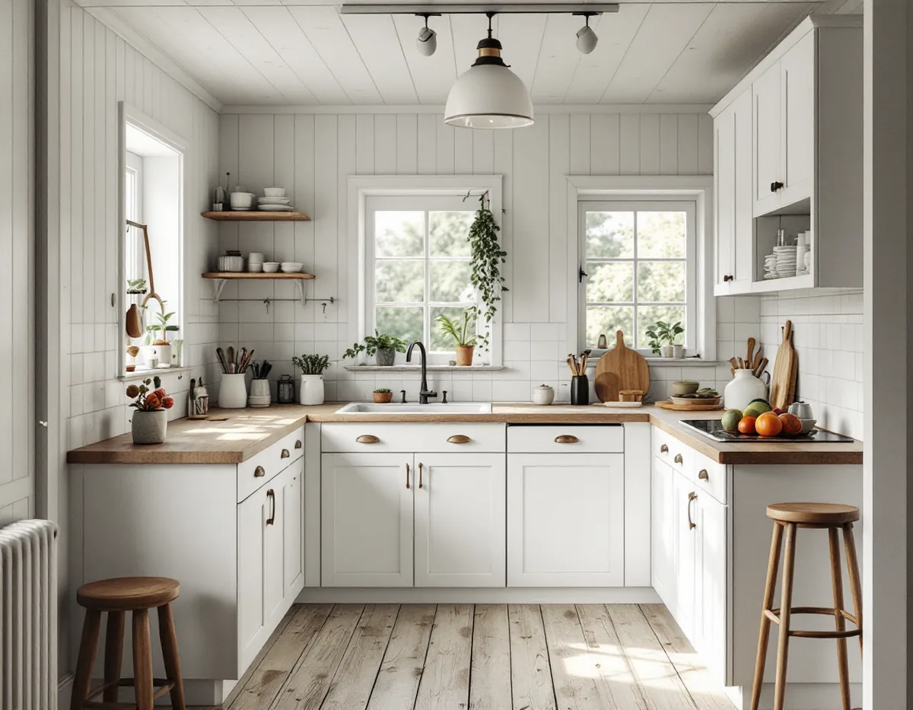
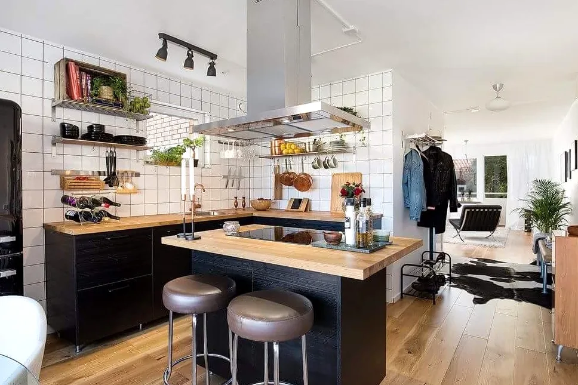

Besök och inventering
Vi tittar på köket, väggarna och ventilationen och tar reda på hur avloppet går.

Haninges småhus kommer från tre epoker: egnahemmen, folkhemmet och rekordåren.
Beskriv jobbet kort.
Något blev fel. Kontrollera uppgifterna eller ring 08 12 410 276.
Vi tittar på jobbet på plats innan du får offert.
Du ser vad som ingår och vad det kostar.
Vi drar av ROT direkt och sköter ansökan.
Geal Entreprenad AB, Bromma. Org.nr 559303-7566.

Varje epok har sitt eget kök, och på Dalarö finns dessutom sommarvillor från 1800-talets slut. Vi utgår från huset, samordnar snickeri, el och VVS och börjar med ett gratis platsbesök och ett skriftligt kostnadsförslag.
Haninge kommun delar i Haninges karaktärsmiljöer in småhusen i tre epoker. Egnahemsområdena från 1910–1940-talen finns i bland annat Tungelsta, Vendelsö, Handen och Västerhaninge. I ett hus som är hundra år gammalt har köket i regel byggts om flera gånger, och det är vanligt att en vägg redan har flyttats eller tagits bort.
Folkhemmets villor, kedjehus och radhus från 1940–1960-talen finns i Handen, Jordbro, Vendelsö och Västerhaninge. Rekordårens småhus från 1960–1980-talen ligger ofta i grupphusområden i Jordbro, Brandbergen, Västerhaninge och Handen, där många hus har samma planlösning och därmed samma läge för kök och stam.
Karaktärsmiljöerna gäller som råd för alla småhusområden från respektive epok. Inne i köket påverkar det sällan något, men ett nytt fönster eller en fläkthuv på fasaden ska passa husets karaktär.
I Haninge är det kommunens enhet för vatten och avlopp som tar emot anmälningar om VA-arbeten. Kommunen skriver på sidan om anmälan om vatten- och avloppsarbete att den som ska installera eller ändra anordningar för vattenförsörjning eller avlopp i huset eller på tomten ska anmäla det. Det görs på en blankett som skickas med e-post eller post eller lämnas på kontoret i Handen.
Enheten har ingen information om hur ledningarna är dragna innanför fastighetsgränsen. Det är alltså upp till fastighetsägaren att ta reda på var ledningarna går, och i ett äldre egnahem kan avloppet behöva filmas innan köket ritas.
Ska diskbänken stå kvar där den står räcker oftast en ny anslutning. Ska den till en köksö blir det en ny dragning, och då hör anmälan till planeringen.
I egnahemmen från 1910–40-talen kan avloppet vara draget i flera omgångar, med delar från olika decennier. Ligger huset i ett område där det kommunala nätet byggts ut senare kan köket ha kopplats om utan att de gamla ledningarna tagits bort. Det är sådant som syns först när golvet öppnas, och därför räknar vi med en kontroll av ledningarna innan inredningen beställs.
För ventilation kräver Haninge kommun anmälan och startbesked när ett nytt system installeras eller det befintliga ändras i större omfattning, till exempel när aggregat eller kanaler byts. Går installationen genom brandcellsgränser behövs brandskyddsdokumentation, och påverkas fasaden kan det krävas bygglov.
Att ändra något som påverkar husets bärande delar kräver också anmälan. Kommunen påpekar att ritningar över de bärande delarna ibland finns i bygglovsarkivet, och att man ska kontakta en konstruktör om man är osäker. Planritningen ska visa läget före och efter ändringen, gärna i skala 1:100.
Kräver bygget bygglov kan kommunen pröva de delar som ska anmälas samtidigt, så att bara en ansökan behövs. Det är praktiskt om köket görs om i samband med en tillbyggnad.
Dalarö blev en exklusiv bad- och sommarort från 1860-talet, och under 1880–90-talen byggdes ett stort antal sommarvillor, enligt en antikvarisk förundersökning för kommunen. Orten är riksintresse för kulturmiljövården, och flera fastigheter har egna detaljplaner med varierande bestämmelser.
I en sommarvilla som används året runt kan köket ha flyttats in i ett rum som från början hade en annan funktion. Snickerier, dörrar och fönster är ofta värda att bevara, och en ny fläktkanal bör dras invändigt eller genom taket snarare än genom en synlig fasad.
Vi kontrollerar planen för just din fastighet innan något som syns utifrån ändras. Takgenomföringen samordnar vi med taket, se takrenovering i Haninge, och ytskikt inomhus med målare i Haninge.
Vi tittar på köket, väggarna och ventilationen och tar reda på hur avloppet går.
Ritningar hämtas ur arkivet, och vid behov anlitas konstruktör eller filmas avloppet.
Du får ett skriftligt förslag, och anmälningar skickas in innan arbetet börjar.
Gammal inredning rivs, och väggar och golv förbereds för de nya installationerna.
El, vatten, avlopp och fläkt dras, och stomme och bänkskiva monteras.
Vi provar allt, städar och går igenom köket med dig.
Enligt Skatteverket ger det rotavdrag i småhus att montera fast köksinredning och installera vitvaror i samband med en omfattande renovering, att sätta kakel, att modernisera elen och byta vägguttag och att installera blandare och kranar. Avdraget är 30 procent av arbetskostnaden, högst 50 000 kr per person och år och 75 000 kr tillsammans med rut.
Material och resor ger inget avdrag. Vi drar avdraget direkt på fakturan.
Om köket stannar kvar på samma plats, hur avloppet är draget i dag, om en vägg ska öppnas och om ventilationen behöver göras om. I en äldre villa kan även snickerier som ska bevaras påverka. Du får ett skriftligt kostnadsförslag efter ett gratis platsbesök.
Planering, el, VVS, fläkt och väggar.
Köksrenovering i Stockholm →Takbyte, takbesiktning och plåtarbeten.
Takläggare i Haninge →Dalarö, Vendelsö och Brandbergen.
Takrenovering i Haninge →Skjutfält, kulturmiljö och skärgårdstomter.
Attefallshus i Haninge →Vakuumtoalett, sluten tank och öarna.
Badrumsrenovering i Haninge →Nytt hus och tillbyggnad i omvandlingsområden.
Byggföretag i Haninge →Mustiga 50-tal och pastell.
Fasadmålning i Haninge →Tegelvillor, grupphus och panelade gårdar.
Fasadrenovering i Haninge →Sportstugor och fönster i skärgårdsväder.
Fönsterbyte i Haninge →Gårdens fönster, från boningshus till ladugård.
Fönsterrenovering i Haninge →Egnahem, sportstugor och hus i sluttning.
Golvläggare i Haninge →Laga och slipa trägolvet i villan.
Golvslipning i Haninge →Egnahem, grupphus och sommarvillor i Haninge.
Målare i Haninge →Falsad plåt, sjöbodar och beslag i Haninge.
Plåtslagare i Haninge →Verandor, altaner och skärmtak.
Snickare i Haninge →Kontrollplan och riskbedömning vid takbyte.
Takbyte i Haninge →Ny tapet och gamla lager i äldre villor.
Tapetsering i Haninge →Lov, situationsplan och kontrollplan.
Tillbyggnad i Haninge →Folkhemsvillan inifrån.
Totalrenovering i Haninge →Eller ring 08 12 410 276, mån–fre 08–17.
Beskriv jobbet kort.
Något blev fel. Kontrollera uppgifterna eller ring 08 12 410 276.